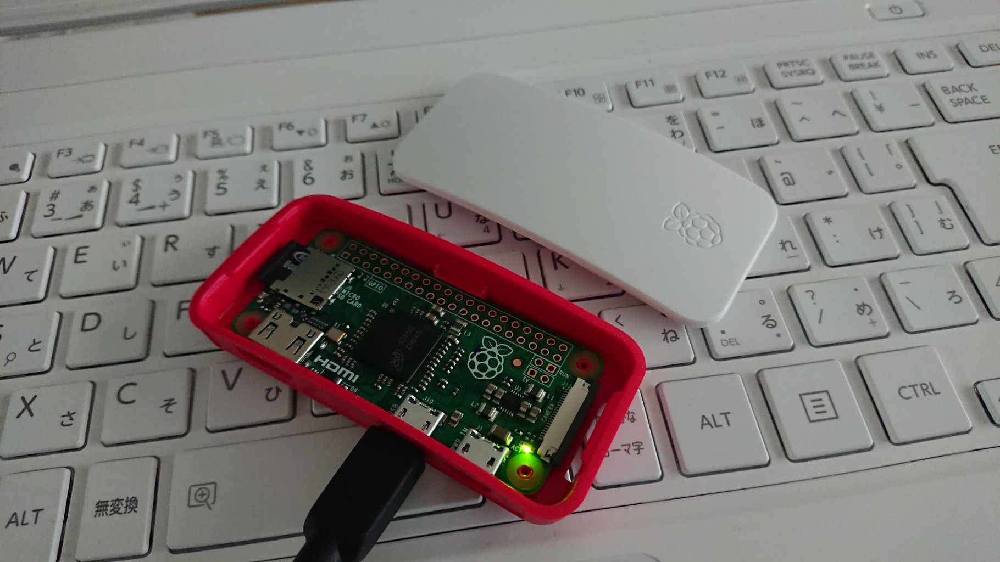
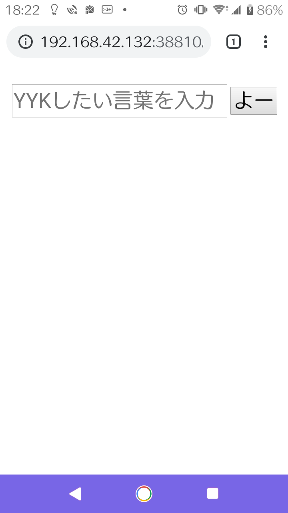
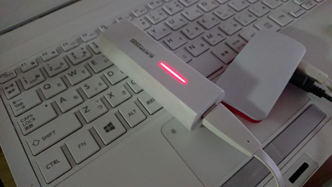

Raspberry Pi Zero v1.3 はフリスクサイズの小さなコンピュータ。
Wifi や Ethernet が付いていない。本体とケースがともに 660 円。

きっかけ
何かのキーワードを調べるとき私は、
- 検索エンジンでキーワードを検索
- 検索結果１件目をぽちっと押して見る
- 検索結果２件目をぽちっと押して見る
- (省略)
- 検索結果５件目をぽちっと押して見る
- だいたいこんな意味なのかなと納得する
という手順でやっているけど、ぽちぽちページを開いたり、文章を読んだりするのが面倒。そもそも私は文章を読むのは好きではない。「機械学習で自動要約できるのでは」と思いついた。
やろうとしたころ
- キーワードを受け取る
- Google 検索をする
- 検索結果上位３件をスクレイピング
- 名詞を抽出
- 自然言語処理（ Word2Vec ）で近しい言葉を集める
- それを何とか文章にする
- 結果を渡す
- これを Azure か何かのクラウドに乗っける
やってしまったこと
クラウドに乗っけたら知らない人がアクセスするんじゃないか。Basic 認証かけて中身をみられていなくても、アクセスされるのはなんか気味悪い。でもどこからでも使いたいから IP アドレス制限もしたくない。という元 SE のくせに変な悪い被害妄想してしまい、クラウド案は却下。
- Raspberry Pi Zero を Win10 から操作する
- MicroSD カード、ケーブルを探す
- Win10 から SSH 接続するための設定
- WEB サーバで Python のプログラムを動かす
～Apache と mod_wsgi を組み合わせ、Python の bottle を使った WEB アプリを動かす- 形態素解析に使う辞書(NEologd)を 8G のラズパイに入れる
- NEologd の READMEそのまま実施
- メモリが足りず失敗するため一時的に swap 領域を 2G に増やし、インストール後は 500MB に戻す
- Python プログラム作り
- 仮想環境（ venv)上に必要なモジュールをインストール
- キーワードを受け取る
- 指定キーワードについて、Google 検索結果上位５件の URL をもらう
- 上位５件の URL に対してスクレイピング（ PDF は除く）
- 名詞と形容詞を抽出
- 話題に含まれる単語をクラスタに分けする(LDA を使う)
- 結果を渡す
- 開発環境（ bottle に梱包の WEB サーバ）で動かしてみる
- Apache の設定
- 形態素解析に使う辞書(NEologd)を 8G のラズパイに入れる
- Android スマホにらスパイを接続して WEB アプリにアクセスする
- モバイルバッテリーを探す
- USB テザリング、IP アドレスの配布状況を確認
- ラズパイに固定 IP を設定
完成系
こんな感じ
スマホの画面

バッテリーから電源を取っている様子
